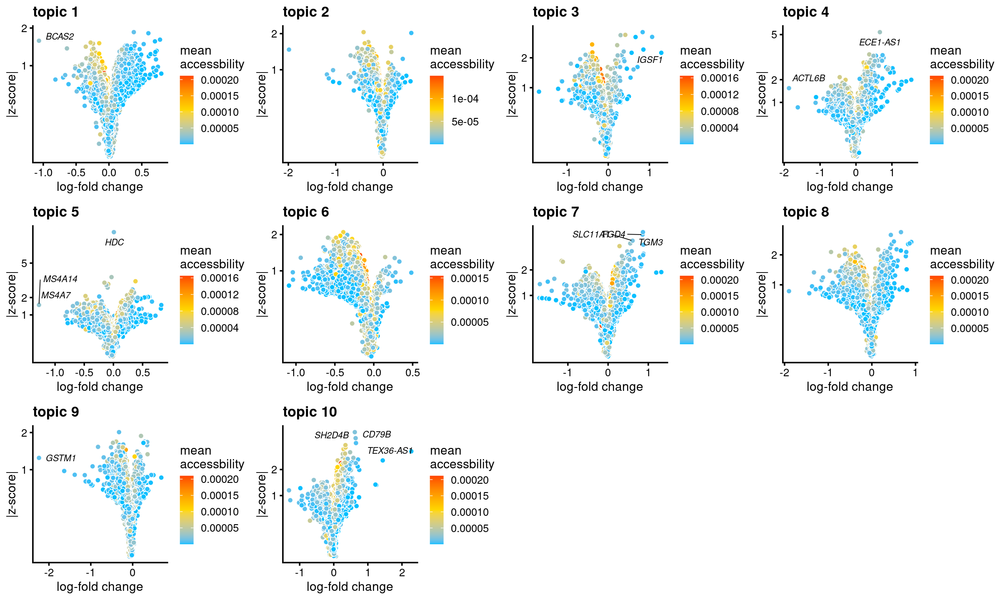
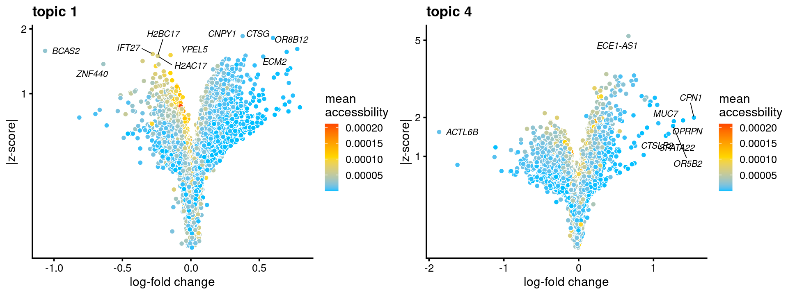
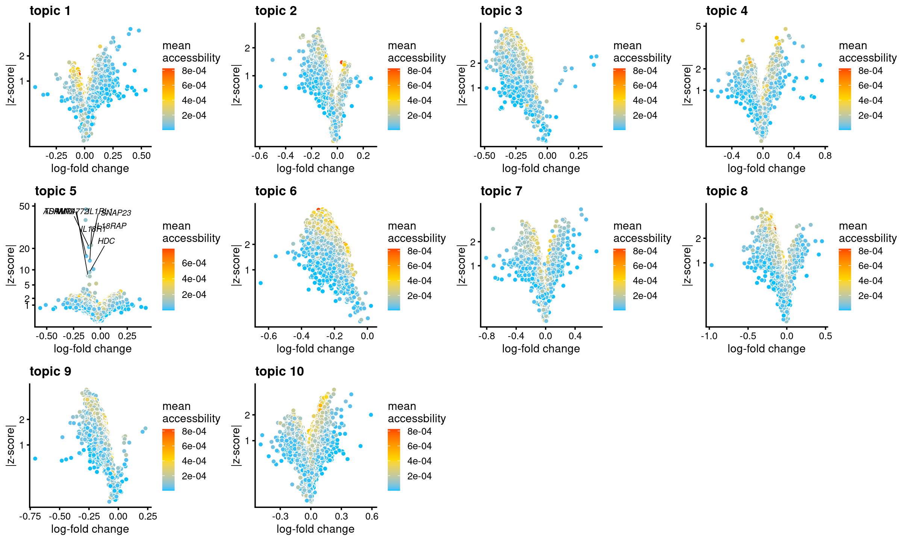
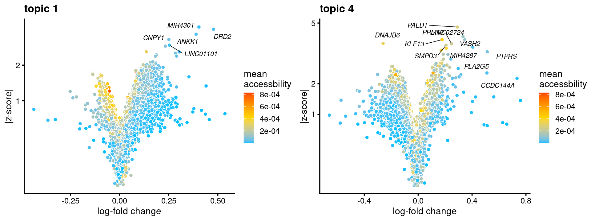

Gene score analysis using topic modeling and DA results (v2) for Buenrostro et al (2018) scATAC-seq result
Kaixuan Luo
Last updated: 2022-03-11
Checks: 7 0
Knit directory: scATACseq-topics/
This reproducible R Markdown analysis was created with workflowr (version 1.7.0). The Checks tab describes the reproducibility checks that were applied when the results were created. The Past versions tab lists the development history.
Great! Since the R Markdown file has been committed to the Git repository, you know the exact version of the code that produced these results.
Great job! The global environment was empty. Objects defined in the global environment can affect the analysis in your R Markdown file in unknown ways. For reproduciblity it's best to always run the code in an empty environment.
The command set.seed(20200729) was run prior to running the code in the R Markdown file. Setting a seed ensures that any results that rely on randomness, e.g. subsampling or permutations, are reproducible.
Great job! Recording the operating system, R version, and package versions is critical for reproducibility.
Nice! There were no cached chunks for this analysis, so you can be confident that you successfully produced the results during this run.
Great job! Using relative paths to the files within your workflowr project makes it easier to run your code on other machines.
Great! You are using Git for version control. Tracking code development and connecting the code version to the results is critical for reproducibility.
The results in this page were generated with repository version c558cfa. See the Past versions tab to see a history of the changes made to the R Markdown and HTML files.
Note that you need to be careful to ensure that all relevant files for the analysis have been committed to Git prior to generating the results (you can use wflow_publish or wflow_git_commit). workflowr only checks the R Markdown file, but you know if there are other scripts or data files that it depends on. Below is the status of the Git repository when the results were generated:
Ignored files:
Ignored: .DS_Store
Ignored: .Rhistory
Ignored: .Rproj.user/
Untracked files:
Untracked: analysis/motif_analysis_Buenrostro2018_v2.Rmd
Untracked: output/clustering-Cusanovich2018.rds
Untracked: paper/
Untracked: scripts/postfit_Buenrostro2018_v2.sbatch
Unstaged changes:
Modified: analysis/assess_fits_Buenrostro2018_Chen2019pipeline.Rmd
Modified: analysis/clusters_Cusanovich2018_k13.Rmd
Modified: analysis/gene_analysis_Buenrostro2018_Chen2019pipeline.Rmd
Modified: analysis/gene_analysis_Cusanovich2018.Rmd
Modified: analysis/motif_analysis_Buenrostro2018_Chen2019pipeline.Rmd
Modified: analysis/motif_analysis_Cusanovich2018.Rmd
Modified: analysis/plots_Cusanovich2018.Rmd
Modified: analysis/process_data_Buenrostro2018_different_options.Rmd
Modified: scripts/postfit_Buenrostro2018_v2.sh
Note that any generated files, e.g. HTML, png, CSS, etc., are not included in this status report because it is ok for generated content to have uncommitted changes.
These are the previous versions of the repository in which changes were made to the R Markdown (analysis/gene_analysis_Buenrostro2018_k10_v2.Rmd) and HTML (docs/gene_analysis_Buenrostro2018_k10_v2.html) files. If you've configured a remote Git repository (see ?wflow_git_remote), click on the hyperlinks in the table below to view the files as they were in that past version.
| File | Version | Author | Date | Message |
|---|---|---|---|---|
| Rmd | c558cfa | kevinlkx | 2022-03-11 | Fixed the data filename |
| html | b2c4858 | kevinlkx | 2022-03-09 | Build site. |
| Rmd | 1f5743c | kevinlkx | 2022-03-09 | compute gene scores for Buenrostro 2018 data with k = 10 |
Here we perform TF motif and gene analysis for the Buenrostro et al (2018) scATAC-seq result inferred from the multinomial topic model with \(k = 10\).
We use binarized data downloaded from original paper.
Load packages and some functions used in this analysis
library(Matrix)
library(fastTopics)
library(dplyr)
library(tidyr)
library(ggplot2)
library(ggrepel)
library(cowplot)
library(DT)
source("code/plots.R")
source("code/gene_annotation.R")
source("code/gene_scores.R")Load data and topic model results
Load the binarized data and the \(k = 10\) Poisson NMF fit results
data.dir <- "/project2/mstephens/kevinluo/scATACseq-topics/data/Buenrostro_2018/processed_data/"
load(file.path(data.dir, "Buenrostro_2018_binarized.RData"))
cat(sprintf("%d x %d counts matrix.\n",nrow(counts),ncol(counts)))# 2034 x 465536 counts matrix.fit.dir <- "/project2/mstephens/kevinluo/scATACseq-topics/output/Buenrostro_2018/binarized/"
fit <- readRDS(file.path(fit.dir, "/fit-Buenrostro2018-binarized-scd-ex-k=10.rds"))$fit
fit <- poisson2multinom(fit)Structure plot
topic_colors <- c("darkorange","limegreen","magenta","gold","skyblue",
"darkblue","dodgerblue","darkmagenta","red","olivedrab")
set.seed(1)
# labels <- factor(samples$label, levels = c("HSC", "MPP", "CMP", "GMP", "mono", "MEP", "LMPP", "CLP", "pDC", "UNK"))
labels <- factor(samples$label, c("mono","pDC","MEP","HSC","MPP","CLP",
"LMPP","CMP","GMP","UNK"))
structure_plot(fit,grouping = labels,colors = topic_colors,
# topics = 1:10,
gap = 20,perplexity = 50,verbose = FALSE)
| Version | Author | Date |
|---|---|---|
| b2c4858 | kevinlkx | 2022-03-09 |
Differential accessbility analysis of the ATAC-seq regions for the topics
Load results from differential accessbility analysis for the topics
out.dir <- "/project2/mstephens/kevinluo/scATACseq-topics/output/Buenrostro_2018/binarized/postfit_v2"
cat(sprintf("Load results from %s \n", out.dir))
DA_res <- readRDS(file.path(out.dir, paste0("DAanalysis-Buenrostro2018-k=10/DA_regions_topics_noshrinkage_10000iters.rds")))# Load results from /project2/mstephens/kevinluo/scATACseq-topics/output/Buenrostro_2018/binarized/postfit_v2Filter out regions with NAs
DA_res <- DA_res[c("postmean", "z", "f0")]
rows_withNAs <- which(apply(DA_res$z, 1, anyNA))
cat("Filter out", length(rows_withNAs), "regions with NAs... \n")
DA_res$postmean <- DA_res$postmean[-rows_withNAs,]
DA_res$z <- DA_res$z[-rows_withNAs,]
DA_res$f0 <- DA_res$f0[-rows_withNAs]# Filter out 10 regions with NAs...Gene score analysis
Prepare annotations and regions
Load gene annotations
genome <- "hg19"
# Load gene annotation
cat("Load gene annotations.\n")
if(tolower(genome) %in% c("hg19", "hg38", "mm9", "mm10")){
cat(sprintf("load TxDb and OrgDb for %s. \n", genome))
TxDb <- getTxDb(genome)
OrgDb <- getOrgDb(genome)
genes <- get_gene_annotations(TxDb, OrgDb, columns_extract = c("ENSEMBL", "SYMBOL"))
}else{
stop("'genome' is not recongized or not available. Please provide your own gene annotation data.")
}
# Prepare a data frame of gene annotation for computing gene scores,
# the first five columns need to be: chr, start, end, strand, gene_id
genes <- as.data.frame(genes)
colnames(genes)[1] <- "chr"
genes <- genes[,c("chr", "start", "end", "strand", "gene_id", "ENSEMBL", "SYMBOL")]
# Filter out genes without matching Ensembl gene IDs.
genes <- genes[!grepl("^NA_", genes$ENSEMBL), ]# Load gene annotations.
# load TxDb and OrgDb for hg19.
# Get genes from TxDb...
# Input keytype of the gene IDs: ENTREZID
# Extract: ENSEMBL
# Extract: SYMBOLExtract genomic coordinates for ATAC-seq regions
regions <- data.frame(x = rownames(DA_res$z)) %>%
tidyr::separate(x, c("chr", "start", "end"), "_") %>%
dplyr::mutate_at(c("start", "end"), as.numeric)Compute gene scores using the TSS model
Gene scores were computed using TSS-based method as in Lareau et al Nature Biotech, 2019 as well as the model 21 in archR paper. This model weights chromatin accessibility around gene promoters by using bi-directional exponential decays from the TSS.
Compute gene-level scores using weighted sum of region-level z-scores, and then normalized by the l2 norm of weights, as in Stouffer's method.
gene.dir <- paste0(out.dir, "/geneanalysis-Buenrostro2018-k=10-TSS-none-l2")
dir.create(gene.dir, showWarnings = FALSE, recursive = TRUE)
cat("Compute gene-level logFC using the TSS model. \n")
gene_logFC <- compute_gene_scores_tss_model(DA_res$postmean, regions, genes, transform="none", normalization = "sum")
cat("Compute gene scores using the TSS model. \n")
gene_scores <- compute_gene_scores_tss_model(DA_res$z, regions, genes, transform="none", normalization="l2")
cat("Compute gene-level mean accessbility using the TSS model. \n")
region_mean_acc <- as.matrix(DA_res$f0)
gene_mean_acc <- compute_gene_scores_tss_model(region_mean_acc, regions, genes, transform="none", normalization = "none")[,1]
genes <- genes[match(rownames(gene_scores), genes$gene_id), ]
genescore_res <- list(mean_acc = gene_mean_acc,
Z = gene_scores,
logFC = gene_logFC,
genes = genes)
saveRDS(genescore_res, file.path(gene.dir, "genescore_result.rds"))gene.dir <- paste0(out.dir, "/geneanalysis-Buenrostro2018-k=10-TSS-none-l2")
genescore_res <- readRDS(file.path(gene.dir, "genescore_result.rds"))
genes <- genescore_res$genes
gene_scores <- genescore_res$Z
gene_logFC <- genescore_res$logFCTop 10 genes by abs(gene z-scores)
topics <- colnames(gene_scores)
top_genes <- data.frame(matrix(nrow=10, ncol = ncol(gene_scores)))
colnames(top_genes) <- topics
for (k in topics){
top_genes[,k] <- genes$SYMBOL[head(order(abs(gene_scores[,k]), decreasing=TRUE), 10)]
}
DT::datatable(data.frame(rank = 1:10, top_genes), rownames = F, caption = "Top 10 genes by abs(gene z-scores)")Volcano plots of gene scores
all topics
genescore_volcano_plot(genescore_res, label_above_quantile = 0.99,
labels = genescore_res$genes$SYMBOL, max.overlaps = 20,
subsample_below_quantile = 0.5, subsample_rate = 0.1)
| Version | Author | Date |
|---|---|---|
| b2c4858 | kevinlkx | 2022-03-09 |
topic 1 and topic 4 examples
p.volcano.1 <- genescore_volcano_plot(genescore_res, k = 1, label_above_quantile = 0.99,
labels = genescore_res$genes$SYMBOL, max.overlaps = 20,
subsample_below_quantile = 0.5, subsample_rate = 0.1)
p.volcano.4 <- genescore_volcano_plot(genescore_res, k=4, label_above_quantile = 0.99,
labels = genescore_res$genes$SYMBOL, max.overlaps = 20,
subsample_below_quantile = 0.5, subsample_rate = 0.1)
plot_grid(p.volcano.1, p.volcano.4)
| Version | Author | Date |
|---|---|---|
| b2c4858 | kevinlkx | 2022-03-09 |
Compute gene scores using the gene body model
Gene scores were computed using the gene score model (model 42) in the archR paper with some modifications. This model uses bi-directional exponential decays from the gene TSS (extended upstream by 5 kb by default) and the gene transcription termination site (TTS). Note: the current version of the function does not account for neighboring gene boundaries.
Compute gene-level scores using weighted sum of region-level z-scores, and then normalized by the l2 norm of weights, as in Stouffer's method.
gene.dir <- paste0(out.dir, "/geneanalysis-Buenrostro2018-k=10-genebody-none-l2")
dir.create(gene.dir, showWarnings = FALSE, recursive = TRUE)
cat("Compute gene-level logFC using the gene-body model. \n")
gene_logFC <- compute_gene_scores_genebody_model(DA_res$postmean, regions, genes, transform="none", normalization="sum")
cat("Compute gene scores using the gene-body model. \n")
gene_scores <- compute_gene_scores_genebody_model(DA_res$z, regions, genes, transform="none", normalization="l2")
cat("Compute gene-level mean accessbility using the gene-body model. \n")
region_mean_acc <- as.matrix(DA_res$f0)
gene_mean_acc <- compute_gene_scores_genebody_model(region_mean_acc, regions, genes, transform="none", normalization="none")[,1]
genes <- genes[match(rownames(gene_scores), genes$gene_id), ]
genescore_res <- list(mean_acc = gene_mean_acc,
Z = gene_scores,
logFC = gene_logFC,
genes = genes)
saveRDS(genescore_res, file.path(gene.dir, "genescore_result.rds"))gene.dir <- paste0(out.dir, "/geneanalysis-Buenrostro2018-k=10-genebody-none-l2")
genescore_res <- readRDS(file.path(gene.dir, "genescore_result.rds"))
genes <- genescore_res$genes
gene_scores <- genescore_res$Z
gene_logFC <- genescore_res$logFCTop 10 genes by abs(gene z-scores)
topics <- colnames(gene_scores)
top_genes <- data.frame(matrix(nrow=10, ncol = ncol(gene_scores)))
colnames(top_genes) <- topics
for (k in topics){
top_genes[,k] <- genes$SYMBOL[head(order(abs(gene_scores[,k]), decreasing=TRUE), 10)]
}
DT::datatable(data.frame(rank = 1:10, top_genes), rownames = F, caption = "Top 10 genes by abs(gene z-scores)")Volcano plots of gene scores
all topics
genescore_volcano_plot(genescore_res, label_above_quantile = 0.99,
labels = genescore_res$genes$SYMBOL, max.overlaps = 20,
subsample_below_quantile = 0.5, subsample_rate = 0.1)
| Version | Author | Date |
|---|---|---|
| b2c4858 | kevinlkx | 2022-03-09 |
topic 1 and topic 4 examples
p.volcano.1 <- genescore_volcano_plot(genescore_res, k = 1, label_above_quantile = 0.99,
labels = genescore_res$genes$SYMBOL, max.overlaps = 20,
subsample_below_quantile = 0.5, subsample_rate = 0.1)
p.volcano.4 <- genescore_volcano_plot(genescore_res, k=4, label_above_quantile = 0.99,
labels = genescore_res$genes$SYMBOL, max.overlaps = 20,
subsample_below_quantile = 0.5, subsample_rate = 0.1)
plot_grid(p.volcano.1, p.volcano.4)
| Version | Author | Date |
|---|---|---|
| b2c4858 | kevinlkx | 2022-03-09 |
sessionInfo()# R version 4.0.4 (2021-02-15)
# Platform: x86_64-pc-linux-gnu (64-bit)
# Running under: Scientific Linux 7.4 (Nitrogen)
#
# Matrix products: default
# BLAS/LAPACK: /software/openblas-0.3.13-el7-x86_64/lib/libopenblas_haswellp-r0.3.13.so
#
# locale:
# [1] LC_CTYPE=en_US.UTF-8 LC_NUMERIC=C
# [3] LC_TIME=en_US.UTF-8 LC_COLLATE=en_US.UTF-8
# [5] LC_MONETARY=en_US.UTF-8 LC_MESSAGES=en_US.UTF-8
# [7] LC_PAPER=en_US.UTF-8 LC_NAME=C
# [9] LC_ADDRESS=C LC_TELEPHONE=C
# [11] LC_MEASUREMENT=en_US.UTF-8 LC_IDENTIFICATION=C
#
# attached base packages:
# [1] stats4 parallel stats graphics grDevices utils datasets
# [8] methods base
#
# other attached packages:
# [1] org.Hs.eg.db_3.12.0
# [2] TxDb.Hsapiens.UCSC.hg19.knownGene_3.2.2
# [3] GenomicFeatures_1.42.3
# [4] AnnotationDbi_1.52.0
# [5] Biobase_2.50.0
# [6] GenomicRanges_1.42.0
# [7] GenomeInfoDb_1.26.7
# [8] IRanges_2.24.1
# [9] S4Vectors_0.28.1
# [10] BiocGenerics_0.36.1
# [11] DT_0.20
# [12] cowplot_1.1.1
# [13] ggrepel_0.9.1
# [14] ggplot2_3.3.5
# [15] tidyr_1.1.4
# [16] dplyr_1.0.8
# [17] fastTopics_0.6-97
# [18] Matrix_1.4-0
# [19] workflowr_1.7.0
#
# loaded via a namespace (and not attached):
# [1] BiocFileCache_1.14.0 plyr_1.8.6
# [3] lazyeval_0.2.2 splines_4.0.4
# [5] crosstalk_1.2.0 BiocParallel_1.24.1
# [7] listenv_0.8.0 digest_0.6.29
# [9] invgamma_1.1 foreach_1.5.1
# [11] htmltools_0.5.2 SQUAREM_2021.1
# [13] fansi_1.0.2 memoise_2.0.1
# [15] magrittr_2.0.2 Biostrings_2.58.0
# [17] recipes_0.1.17 globals_0.14.0
# [19] gower_0.2.2 RcppParallel_5.1.5
# [21] matrixStats_0.61.0 MCMCpack_1.6-0
# [23] askpass_1.1 prettyunits_1.1.1
# [25] colorspace_2.0-3 rappdirs_0.3.3
# [27] blob_1.2.2 xfun_0.29
# [29] callr_3.7.0 crayon_1.5.0
# [31] RCurl_1.98-1.5 jsonlite_1.7.3
# [33] survival_3.2-13 iterators_1.0.13
# [35] glue_1.6.2 gtable_0.3.0
# [37] ipred_0.9-12 zlibbioc_1.36.0
# [39] XVector_0.30.0 MatrixModels_0.5-0
# [41] DelayedArray_0.16.3 future.apply_1.8.1
# [43] SparseM_1.81 scales_1.1.1
# [45] DBI_1.1.2 Rcpp_1.0.8
# [47] viridisLite_0.4.0 progress_1.2.2
# [49] bit_4.0.4 lava_1.6.10
# [51] prodlim_2019.11.13 truncnorm_1.0-8
# [53] htmlwidgets_1.5.4 httr_1.4.2
# [55] ellipsis_0.3.2 XML_3.99-0.8
# [57] pkgconfig_2.0.3 farver_2.1.0
# [59] dbplyr_2.1.1 nnet_7.3-17
# [61] sass_0.4.0 uwot_0.1.11
# [63] utf8_1.2.2 caret_6.0-90
# [65] tidyselect_1.1.2 labeling_0.4.2
# [67] rlang_1.0.1 reshape2_1.4.4
# [69] later_1.3.0 cachem_1.0.6
# [71] munsell_0.5.0 tools_4.0.4
# [73] cli_3.2.0 generics_0.1.2
# [75] RSQLite_2.2.9 evaluate_0.14
# [77] stringr_1.4.0 fastmap_1.1.0
# [79] yaml_2.2.2 mcmc_0.9-7
# [81] ModelMetrics_1.2.2.2 processx_3.5.2
# [83] knitr_1.37 bit64_4.0.5
# [85] fs_1.5.2 purrr_0.3.4
# [87] pbapply_1.5-0 future_1.23.0
# [89] nlme_3.1-155 whisker_0.4
# [91] quantreg_5.86 xml2_1.3.3
# [93] biomaRt_2.46.3 compiler_4.0.4
# [95] rstudioapi_0.13 curl_4.3.2
# [97] plotly_4.10.0 tibble_3.1.6
# [99] bslib_0.3.1 stringi_1.7.6
# [101] highr_0.9 ps_1.6.0
# [103] lattice_0.20-45 vctrs_0.3.8
# [105] pillar_1.7.0 lifecycle_1.0.1
# [107] jquerylib_0.1.4 data.table_1.14.2
# [109] bitops_1.0-7 irlba_2.3.5
# [111] conquer_1.2.1 rtracklayer_1.50.0
# [113] httpuv_1.6.5 R6_2.5.1
# [115] promises_1.2.0.1 parallelly_1.30.0
# [117] codetools_0.2-18 MASS_7.3-55
# [119] assertthat_0.2.1 SummarizedExperiment_1.20.0
# [121] openssl_1.4.6 rprojroot_2.0.2
# [123] withr_2.4.3 GenomicAlignments_1.26.0
# [125] Rsamtools_2.6.0 GenomeInfoDbData_1.2.4
# [127] hms_1.1.1 quadprog_1.5-8
# [129] grid_4.0.4 rpart_4.1-15
# [131] timeDate_3043.102 coda_0.19-4
# [133] class_7.3-20 rmarkdown_2.11
# [135] MatrixGenerics_1.2.1 ashr_2.2-47
# [137] Rtsne_0.15 git2r_0.29.0
# [139] mixsqp_0.3-43 getPass_0.2-2
# [141] pROC_1.18.0 lubridate_1.8.0